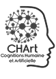

Assistant pédagogique numérique
Aide les élèves à s’approprier les stratégies d’apprentissage en lecture, compréhension de l’écrit et de l’oral, expression écrite et étude de la langue (cycle 3).
Édumalin – Français cycle 3 est un projet retenu par le ministère de l’Éducation nationale dans le cadre du P2IA (Partenariat d’innovation en intelligence artificielle).
Nouveauté
Aide les élèves à s’approprier les stratégies d’apprentissage en lecture, compréhension de l’écrit et de l’oral, expression écrite et étude de la langue (cycle 3).
Nous augmentons notre socle pédagogique (différencier, guider et faire progresser) avec de l’IA pour accompagner chaque élève dans l’apprentissage du français en cycle 3.
Ce projet, soutenu par le ministère de l’Éducation nationale, associe enseignants, chercheurs et ingénieurs pour concevoir une IA explicable et éthique, centrée sur l’apprentissage.
Assistant pédagogique numérique qui aide les élèves à s’approprier les stratégies d’apprentissage en lecture, compréhension de l’écrit et de l’oral, expression écrite et étude de la langue (cycle 3).
Recherche et développementPhase 1 · 15 mois
Sept. 25 – déc. 26
1. État de l’art · 2. Développement · 3. Expérimentations
Pré-industrialisationJanv. 27 – juin 27
AcquisitionJuin 27 – nov. 31
Dans le cadre du P2IA, Édumalin développe son offre en co-construction avec les établissements scolaires.
Nous avons déjà pu tester la ressource en conditions réelles dans les établissements de 19 académies. Des moments riches en échanges avec les élèves et les équipes pédagogiques, qui nous permettent de confronter la solution aux usages concrets, de recueillir de précieux retours et d’améliorer en continu notre solution. Cette démarche collaborative avec les établissements est au cœur du projet : c’est sur le terrain, au plus près des usages, que l’innovation prend tout son sens !
La dynamique se poursuit : ces tests sont ouverts courant octobre 2026 à tous les enseignants en cycle 3 qui souhaitent y participer !
Vous êtes intéressé(e) ? C’est très simple : il suffit de remplir le formulaire d’inscription. Vous trouverez ensuite toutes les informations nécessaires dans le guide enseignant.
Un guide enseignant pas à pas, des activités prêtes à l’emploi et une équipe disponible pour répondre à vos questions avant, pendant et après les séances.
Assignez votre travail, vos élèves les réalisent en autonomie, à leur rythme. Vous observez en temps réel leurs comportements et récoltez leurs retours via un questionnaire post-séance.
Vos observations et celles de vos élèves alimentent directement les décisions produit. Chaque retour compte : c’est vous qui façonnez la prochaine version d’Édumalin.
Plongez au cœur de la 3e phase d’expérimentation du prototype Édumalin (P2IA), conçu pour épauler les enseignants et stimuler la réussite des élèves du cycle 3.
Découvrez les nouveautés de la 3e phase d’expérimentation d’Édumalin (P2IA) : nouveaux modelages fondés sur l’enseignement explicite, activités guidées et suivi individualisé. Ce webinaire présente également une IA éthique et sécurisée, encadrée par des experts pédagogiques et pensée pour accompagner les enseignants sans exposer directement les élèves à une IA générative.
Replay bientôt disponible.
L’IA développée par Édumalin met la recherche au service de la pédagogie.
Un niveau de guidage adapté au profil de chaque élève.
Des feedbacks personnalisés pour comprendre et corriger ses erreurs.
Une remédiation facilitée qui oriente vers les bonnes activités.
Des stratégies d’apprentissage explicitées pour apprendre à apprendre.
Une accessibilité renforcée pour soutenir l’attention et la compréhension de tous.
L’IA développée par Édumalin met la recherche au service de la pédagogie.

Notre plateforme s’appuie sur plusieurs services technologiques conçus pour adapter en continu les apprentissages aux besoins de chaque élève.
Paramètre les aides à la lecture selon le profil de l’élève.
Identifie et classe les types d’erreurs rencontrées.
Évalue le décodage, la vitesse et la prosodie de lecture.
Génère automatiquement des feedbacks adaptés à la réponse de l’élève.
Crée des activités avec un guidage paramétrable selon le niveau de l’élève.
Les briques technologiques sont des outils d’assistance. Elles n’ont pas vocation à se substituer au jugement professionnel de l’enseignant.